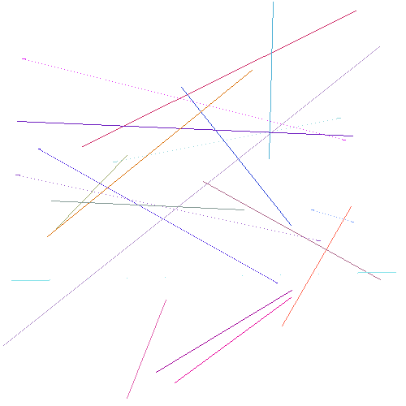
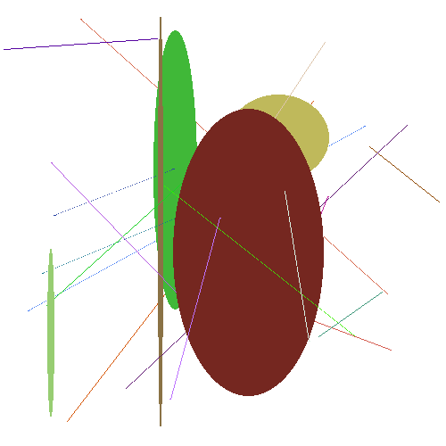

Automatizando Tarefas Tediosas
PASIA - Aula P.6
DAC - ICET - Universidade Federal de Lavras
16/09/2025
Tarefa 1: Juntando fotos de vários celulares
Imagine que queremos juntar fotos dos nossos celulares e de nossos familiares.
- A ideia é ter tudo acessível em um único lugar.
- Para que todos possam ter acesso a todas as fotos.
- Mas, provavelmente, existem fotos repetidas, que uma pessoa mandou para outra.
- e não queremos ter fotos repetidas no nosso acervo.
Vamos então criar uma ferramenta que faça isso para nós.
Para testar, vamos usar o arquivo AulaP6-tarefa1.zip que contém várias figuras em PNG.
- Existem duas subpastas,
figuras1efiguras2, cada uma com várias figuras. - Não são fotos reais, mas servem para testar a ferramenta.
A pasta figuras1 tem 98 figuras e a pasta figuras2 tem 112.
- No total são então 210 figuras, mas 10 são repetidas.
- Por ex.: a figura
1566.pngda pastafiguras1é idêntica à figura2471.pngda pastafiguras2.
- Por ex.: a figura
- Portanto, se nossa ferramenta funcionar corretamente, no final teremos 200 figuras.
- Além disso, devemos tomar cuidado pois podem existir fotos diferentes nas duas pastas mas com o mesmo nome.
- Por ex.: a figura
9595.pngda pastafiguras1é diferente da figura9595.pngda pastafiguras2. - Nesse caso nós não queremos perder nenhuma das duas, e precisaremos renomear uma delas.
- Por ex.: a figura
Tarefa 1
A ideia é que você crie a ferramenta em Python para tratar essa demanda de juntar as fotos. A ferramenta deve ser suficientemente genérica para que possa ser usada para juntar fotos de várias pastas (e não apenas as duas do exemplo). Deve ser possível também usar a ferramenta novamente para acrescentar novas fotos na pasta que contém as fotos juntadas (sem duplicar fotos).
Lembre-se de usar o fluxo de trabalho que vimos na aula anterior (e que está repetido no próximo slide).
Dica: você deve usar os arquivos disponíveis em AulaP6-tarefa1.zip para realizar testes. Confira se são geradas 200 fotos no total.
Depois de fazer o exercício, leia os slides seguintes que apresentam como o problema foi tratado pelos autores do livro e algumas dicas de como o professor lidou com problemas teve para construir a ferramenta.
Fluxo de trabalho para usar o Copilot na criação de ferramentas que usem módulos do Python.
- Pedir ao Copilot (ou ChatGPT) para listar módulos do Python que podem ser usados para a tarefa de interesse.
- Perguntar ao Copilot sobre os prós e contras de cada módulo.
- Escolher o módulo que parece mais adequado.
- Se necessário, criar um ambiente virtual e instalar o módulo.
- Seguir o Ciclo de Projeto de Funções que vimos anteriormente, incluindo o módulo escolhido.
- Se ficarmos travados, tentamos um módulo diferente.
Para esse exemplo, não vou colocar o passo a passo completo nos slides como fiz na aula teórica.
- Apresento a seguir os prompts usados no livro, mas sem incluir os resutados do Copilot.
- Você pode repetir os passos no seu computador e teste com o arquivo mencionado.
Atenção: ao fazer no meu computador eu descobri que precisei fazer uma engenharia de Prompt e também vi que o código gerado perdia dois arquivos!
- Isso reforça a importância de sempre testar bem uma ferramenta criada com suporte de Assistentes de IA.
Prompt
Eu preciso escrever um programa em Python que copia arquivos. Como posso fazer isso?
- A ideia de copiar arquivos em vez de movê-los é para evitar perda de dados.
Prompt
O módulo shutil precisa ser instalado?
Prompt
Como eu posso descobrir se dois arquivos PNG são idênticos usando Python?
Prompt
E se eu tiver centenas de arquivos PNG e quiser encontrar arquivos duplicados? Essa abordagem ainda funciona?
Prompt
Como eu posso descobrir se dois arquivos PNG são idênticos usando Python?
A partir daí os autores livro usam decomposição de problemas para criar a ferramenta.
- A ideia é criar uma ferramenta mais genérica de forma que possa ser usada em mais situações.
- Por exemplo, ela poderia receber várias pastas de figuras e não apenas duas.
- E poderia copiar as fotos para uma pasta de destino,
- sempre verificando se a foto já existe lá (para evitar duplicatas).
Os autores, usando design top-down, definem então as funções abaixo.
fazer_varias_copias: faz cópias de várias fotos de várias pastas em uma pasta de destino, desde que elas não sejam duplicadas.fazer_copia: faz a cópia de uma única foto em uma pasta de destino, desde que ela não seja duplicada.obter_bom_nome_arquivo: gera um nome para a foto copiada de forma a evitar perda de dados por conflito de nomes.
Essas são as assinaturas e docstrings das funções usadas no livro.
- Como já vimos antes, na hora de implementar seguimos o caminho bottom-up.
- Portanto, será apresentada primeira a 3ª função, depois a 2ª e por fim a 1ª.
def fazer_copia(nome_arquivo, pasta_destino):
"""
nome_arquivo é um nome de arquivo, como figuras1/1262.png.
pasta_destino é o nome de uma pasta.
Compara o conteúdo do arquivo apontado por nome_arquivo com
todos os arquivos na pasta_destino (não importa o nome do arquivo).
Se o arquivo não for idêntico a nenhum arquivo na pasta_destino,
faz uma cópia do arquivo na pasta_destino.
"""def fazer_varias_copias(pastas, pasta_destino):
"""
pastas é uma lista de nomes de pastas.
pasta_destino é o nome de uma pasta.
Verifica cada arquivo nas pastas da lista pastas
e compara com todos os arquivos em pasta_destino.
Se um arquivo não for idêntico a nenhum arquivo em pasta_destino,
faz uma cópia do arquivo em pasta_destino.
"""Como eu tinha mencionado, nos meus testes, o código gerado inicialmente pelo Copilot não estava correto.
Primeiramente tive que mudar o prompt da função fazer_copia.
- Pois, traduzindo diretamente o prompt do livro, a função estava olhando apenas os nomes dos arquivos e não o conteúdo.
Depois, ao usar o programa, vi que estavam sendo gerados 198 arquivos em vez de 200.
- Os arquivos abaixo, por exemplo, estavam sendo identificados como idênticos pelo programa e, portanto, um deles seria perdido.


E o pior: ao comparar o código gerado com o do livro, a comparação usava a mesma função filecmp.cmp.
- Como então funcionava no livro, mas não no meu computador?
Era de hora de usar ferramentas de debugging.
- A primeira coisa que fiz foi imprimir os nomes dos arquivos que estavam sendo considerados idênticos.
- Como eu sabia que deveriam ser 10 arquivos idênticos e estavam aparecendo 12, não seria tão complicado conferir manualmente.
- E o primeiro par de arquivos mostrado já foi o que mostrei no slide anterior.
Perguntei ao Copilot como funciona a função filecmp.cmp, usada no código gerado pelo Copilot para comparar os arquivos.
- E, na explicação, descobri que a função tem um parâmetro
shallowque por padrão éTrue.- Obs.: em Python, parâmetros com valores padrões não precisam ser passados na chamada da função.
- Com o valor padrão
shallow=True, a função não compara o conteúdo dos arquivos, mas sim seus metadadados (tipo, tamanho e data de modificação).- E as imagens que mostrei, por coincidência, tinham o mesmo tamanho, tipo e data de modificação.
Alterei então o código passando shallow=False como argumento da função e o problema foi resolvido.
- Foram gerados os 200 arquivos esperados.
Mas por que então o código do livro funcionava?
- A questão é que eu estava usando Ubuntu e os autores do livro estavam usando Windows.
- Provavelmente o erro se deve ao fato de que a data de modificação dos arquivos tem precisão diferente nos dois sistemas operacionais.
- Enviei então uma errata para os autores do livro.
Aproveito esse episódio para reforçar alguns pontos:
- Cuidado com automatizações que podem levar a perda de dados.
- Faça testes.
- Trabalhe com cópias dos dados originais.
Tarefa 2: Vendas Totais
Tarefa 2
O arquivo vendas_produtos.xlsx contém dados de vendas mensais de diferentes produtos. Sua tarefa é criar uma ferramenta em Python que leia o arquivo, calcule o total de vendas de cada produto, e escreva o resultado em um novo arquivo do Excel chamado vendas_totais.xlsx.
A planilha de resultado deve ter três colunas: Descrição do Produto, Código do Produto e Total de Vendas.
Para ajudar na validação, o próximo slide apresenta o resultado esperado.
| Descrição do Produto | Código do Produto | Total de Vendas |
|---|---|---|
| Cadeira Escritório | P008 | R$ 17.982,43 |
| HD Externo Seagate | P010 | R$ 3.699,33 |
| Headset JBL | P009 | R$ 22.404,40 |
| Impressora HP | P005 | R$ 3.931,24 |
| Monitor LG | P004 | R$ 28.756,69 |
| Mouse Gamer | P007 | R$ 25.156,30 |
| Notebook Dell | P001 | R$ 19.085,25 |
| Smartphone Samsung | P002 | R$ 4.438,86 |
| Tablet Apple | P003 | R$ 5.330,93 |
| Teclado Mecânico | P006 | R$ 13.751,35 |
Tarefa 3: Atualizado com as Notícias
Tarefa 3
Para quem gosta de ser bem informado, pode ser entediante consultar vários sites de notícias todos os dias para selecionar o que gostaria de ler.
Sua tarefa é escrever um webscraper em Python que extrai e exibe as manchetes e as URLs (links) das notícias mais recentes de um site de notícias.
Dica: provavelmente você precisará dos módulos beautifulsoup4 e requests.